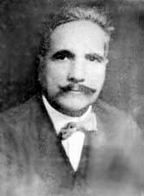

Muhammed Ýkbal (1873-1938)

Doðunun yetiþtirdiði büyük bir edebiyatçý ve Pakistan'ýn milli þairidir. Baðýmsýz Pakistan'ýn kuruluþunda, fikri temelin oluþmasýnda önemli katkýsý olmuþtur. Mevlana'nýn etkisinde kalmýþ ve ona hayranlýðýný dile getirmiþtir. Ýslam dünyasýnýn içinde bulunduðu kötü durumdan kurtulmanýn çareleri üzerinde kafa yormuþ, verdiði seri konferanslarla düþüncelerini dile getirmiþtir. Risale-i Nur'da ismi zikredilmekte ve özellikle þairliðine, heyecanlý þiirlerine atýf yapýlmýþtýr. (Tarihçe-i Hayat, s. 9, 11). Karaþi Nur Talebeleri tarafýndan gönderilen (30. 3. 1957) ve Tarihçe-i Hayat'ta yer alan (s. 622) bir mektupta ismi zikredilmektedir.Ýkbal, 1873 yýlýnda Pencap Eyaletinin Keþmir sýnýrý yakýnlarýnda bulunan Siyalkut (Seyalkat) þehrinde dünyaya geldi. Dindar bir anne-babanýn evladý olarak yetiþmeye baþladý. Babasý Nur Muhammed annesi Ýmam Bibi'dir. Ebeveynlerinin mütedeyyin aile hayatý onu önemli ölçüde etkiledi. Küçük yaþlarýndan itibaren Kur'ân-ý Kerim'i okumaya baþladý. Medreseye de giderek büyük bir bölümünü ezberledi. Ýlk ve orta öðrenimini memleketi Siyalkut'ta tamamladý. 1895 yýlýnda Lahor'a gitti. Burada bulunan hükümet kolejinde felsefe ve hukuk derslerinin aðýrlýkta bulunduðu bir eðitimden geçti. Arapça ve Farsça dillerini öðrendi. Felsefe ve Ýngilizce öðretmenliði diplomasýný aldý. Tayin edildiði Lahor doðu dilleri fakültesine hocalýk yaptý. Bu arada þiirleriyle de dikkat çekmeye baþladý.
Ýkbal'in görmüþ bulunduðu bu eðitim döneminde özellikle hocalarýndan Mevlânâ Mir Hasan ile Thomas Arnold'un etkisinde kaldýðý tahmin edilmektedir. Bilahare yeteneðiyle Arnold'un dikkatini çekmesi, bu hocasý tarafýndan Avrupa'ya gönderilmesinde önemli rol oynadý. Bundan sonra Cambridge Üniversitesine giderek üç yýl öðretim gördü ve yüksek lisansýný tamamladý. Daha çok Felsefe alanýnda eðitim görmesine karþýlýk, hukuk ile ilgili dersler de aldý. Londra'da kaldýðý süre zarfýnda vermiþ bulunduðu konferanslarý sayesinde geniþ bir kesim tarafýndan tanýnýr hale geldi. Buradaki eðitimini tamamladýktan sonra Münih'e geçti. Burada doktorasýný yaparak Felsefe bilim dalýnda doktor oldu. Bu eðitiminin akabinde Lahor'a döndü.
Ýkbal, ülkesine döndükten sonra muhtelif okullarda Ýngilizce ve Felsefe derslerini okuttu. Ancak, uzun süre bu görevi yapamayacaðýný anlayarak istifa etti. O sýralarda Hindistan Ýngilizlerin iþgali altýnda bulunuyordu. Öðretmenliði býrakmaya sebep olarak, Ýngilizlere hizmet etmenin zor olduðunu, kendisini hür olarak hissetmediðini gerekçe gösterdi. Öðretmenlikten ayrýldýktan sonra istediðini söyleyebileceðini ve daha hür olduðunu dile getirdi. Bu arada hukuk alanýna olan ilgisinden dolayý bu alanla ilgili çalýþmalar yaparak kendini yetiþtirdi. Geçimini de büyük ölçüde avukatlýk yapmak suretiyle saðladý. Haklýlýðýndan emin olmadýðý veya kazanacaðýna ihtimal vermediði dâvâlarý almaktan özenle kaçýndý.
Ýkbal, devletin resmî görevini býraktýktan sonra eðitim-öðretim kurumlarýyla baðýný koparmadý. Lahor'da bulunan Ýslâm Akademisi ile aradaki baðý devam ettirdi. Burada ders vermeye devam etti. muhtelif üniversitelerde de ilmi konferanslar verdi. Afgan hükümetinin davetlisi olarak gittiði Afganistan'da eðitim komisyonunun çalýþmalarýna katýldý.
Ýkbal, Ýslâm dünyasýnýn içinde bulunduðu sýkýntýlardan kurtulmak için çaba sarf etti. Batýnýn da etkisiyle Ýslâm milletlerinin bir rönesanstan geçmesi gerektiði fikrine inandý. Bir dönem dini konularda kendine mahsus fikirler ileri sürdü. 1926-29 yýllarý arasýnda Pencap Yasama Konseyi üyeliðinde bulundu. Bu tarihlerde Haydarabad ve Aligarh üniversitelerinde verdiði konferanslarýnda Ýslâm düþüncesinin yeniden kurulmasý fikri üzerinde durdu.
Ýkbal'ýn en önemli faaliyetlerinin arasýnda Pakistan'ýn kuruluþu ile ilgili çalýþmalar yer almaktadýr. Bu faaliyetlerine henüz baþlamýþken Ýngilizler tarafýndan kendisine verilen "sir" ünvanýný kullanmadý. 1930 yýlý Aralýk ayýnda bütün Hindistan Müslümanlarý Birliðinin Allahabad'ta gerçekleþtirdikleri toplantýya baþkanlýk yaptý. Ýlk defa burada Pakistan fikrini ortaya attý. Kýsa bir süre sonra Londra'da yapýlan yuvarlak masa toplantýlarýna delege olarak davet edildi. Burada da fikrini dile getirmeye devam etti. Akabinde verdiði konferanslarda, katýldýðý toplantýlarda, yazdýðý makalelerde Baðýmsýz Pakistan ile ilgili fikirlerini iþlemeye ve dile getirmeye devam etti. 1931 yýlýnda toplanan 2. Milletlerarasý Ýslâm Konferansýna katýldý. Burada Dünya Ýslâm Kongresinin baþkan yardýmcýlýðýna getirildi.
Ýkbal, Pakistan'ýn kurucusu olarak tarihe geçecek olan Muhammed Ali Cinnah ile de yakýn temas kurdu. Londra'da düzenlenen 2. yuvarlak masa toplantýsýnda Cinnah ile yakýn bir çalýþma içinde bulundu. Bu toplantý sonrasýnda Ýtalya ve Mýsýr üzerinden Filistin'e giderek burada düzenlenen Dünya Ýslâm Konseyi toplantýsýna katýldý. Ýkincisinden iki yýl sonra Londra'da düzenlenen 3. Yuvarlak Masa toplantýsýnda da bulundu. Bu toplantý için bulunduðu Londra'dan Paris'e geçti. Burada bazý görüþmelerde bulundu. Akabinde Ýspanya'ya geçerek, ziyaret etmesine ve namaz kýlmasýna zorla izin verilen Kurtuba Camii'nde namaz kýldý. Bu hadise unutamadýðý hatýralarý arasýnda yer aldý ve bununla ilgili olarak "Mescid-i Kurtuba" baþlýðýný taþýyan þiirini kaleme aldý.
Ýkbal, Ýspanya'dan sonra Ýtalya'ya geçerek burada Mussolini ile görüþtü. Ondan Kuzey Afrika'daki Müslümanlara iyi davranmasýný istedi. 1933 yýlýnda Afganistan kralý Nadir Þah'ýn davetlisi olarak Süleyman Nedvi ile birlikte bu ülkeye gitti. Burada ülkenin idari sistemi ve yeniden yapýlandýrýlmasý konularýnda görüþmelerde bulundu. 1937 yýlýnda Cinnah'a bir mektup yazarak Ýngilizlerin, Hindistan Müslümanlarýnýn Pakistan adý altýnda ayrý bir devlet olarak kurulmasýný istediklerini ve bunun uygulanacak bir plan çerçevesinde 25 yýl içinde gerçekleþeceðini haber verdi. Pakistan devletinin kurulmasý olayý Müslümanlar arasýnda büyük bir sevince vesile oldu. Ýkbal'in baðýmsýzlýk ile ilgili faaliyetlerde bulunmasý baðýmsýzlýðýn sembol isimlerinden biri olarak anýlmasýna sebep oldu.
Risâle-i Nur'da; "Büyük Ýkbal'in heyecanlý þiirlerinden aldýðým coþkun bir ilham neþesi" ifadelerini kullanan ve Tarihçe-i Hayat'ýn önsözünü kaleme alan Ali Ulvi Kurucu, Ýkbal'in heyecan verici þiirlerine atýfta bulunmaktadýr. Karaþi'den Türkiye'ye mektup yazan buradaki Nur talebeleri Risâle-i Nur'a olan büyük alakayý dile getirmektedirler. Ayrýca Pakistanlý din alimlerinin Risâle-i Nur'a kavuþmalarýndan ve istifade etmekten büyük sevinç duyduklarýna iþaret edilmekte ve Bediüzzaman'a büyük bir ilgi duyduklarý belirtilmektedir. Ayrýca büyük hizmetlerde bulunan þahsiyetlerin azlýðýndan ve Ýkbal'in de vefat etmiþ bulunmasýndan söz edilmektedir. Büyük insanlarýn ismi zikredilirken bunlarýn arasýnda Bediüzzaman'ýn müstesna bir yere sahip olduðu vurgulanmaktadýr.
Ýkbal'in þiirlerinde iþlediði tabiat, insan ve Hindistan temalarý sadece Müslümanlar arasýnda deðil ayrýca Hintliler arasýnda da büyük ilgi uyandýrdý. Vatansever ruh taþýyan þiirler Hintlilerin arasýnda büyük alâka uyandýrdý. Avrupa dönüþünde kaleme aldýðý þiirlerinde daha çok dini ve felsefi konulara yer verdi. Farsça'yý kullanmasý çok daha büyük bir kitleye ulaþmasýna vesile oldu. 1927 yýlýnda yazdýðý 'Cavidname' adlý eseri bir þaheser mahiyetindedir. Þair, sanatý sanat için deðil, topluma hizmet ve hayat vermek, benliði kuvvetlendirmek için algýlamayý ve benimsemeyi tercih etti.
Bilim, din ve felsefenin yakýn bir iliþki içinde bulunduðunu savundu. Bilimin sürekli geliþmesine paralel olarak felsefi ve dinî görüþlerde de yeniden kuruluþ sürecinin yaþandýðýný belirtti. Diðer taraftan bilimin hiçbir zaman evreni sistematik olarak kavrama imkânýný da vermediðine iþaret etti. Dinin hem duygu, hem doktrin hem de faaliyet olduðunu savundu. Duygu ve düþüncelerin eylemden koparýlamayacaðýný, dinin sadece birkaçýnýn fonksiyonu olmaktan ibaret görülemeyeceðini, hem tecrübeye hem de inanca yer verilmesi gerektiðini savundu.
Ýkbal, Allah'ýn sýfatlarýný sürekli faal oluþlarý çerçevesinde deðerlendirdi ve yorumladý. Cenâbý Hakkýn geçmiþ ve geleceði bilmesini, þu anda olmuþ bitmiþ bir yapý olarak görmemek gerektiðine iþaret etti. Geleceði bilmesini, henüz gerçeklik kazanmamýþ imkânlarý bilmesi þeklinde algýlamak gerektiðini ifade etti. Ýnsanoðlunun varlýk sahnesine çýkmasýyla birlikte alemin akýl, aþk ve hür iradeye sahip deðerli bir varlýða kavuþtuðunu belirtti. Kur'ân-ý Kerim'in tasvir ettiði mü’minin tamamen aktif bir insan olmasýna raðmen, zamanla ve nesillerin deðiþmesiyle Müslümanlar arasýnda bu aktifliðin zayýflamaya baþladýðýný ifade etti (Mehmet S. Aydýn; "Muhammed Ýkbal", TDVÝA. 22. C. s. 20).
Ýkbal, Ýslâm'da dini düþüncenin son beþ asýrda hareketliliðini yitirdiðini, zamanýmýzda meydana gelen geliþmeler karþýsýnda dinî düþüncenin yeniden kurulmasýnýn elzem olduðunu ifade etmektedir. Bunun için de geleneksel yapýnýn tenkit edilmesi ve tefekkürün geliþmeler ýþýðýnda yeniden inþa edilmesi yoluyla yapýlabileceðine iþaret eder.
Türkiye'ye de büyük ilgi duyan Ýkbal ayný zamanda Mevlânâ'ya da hayranlýðýný ifade etmektedir. Trablusgarp, Balkan, Birinci Dünya Savaþý ve Millî Mücadele dönemlerinde gösterilen kahramanlýklardan övgüyle söz eder. 1922'de saltanatýn kaldýrýlarak hilâfetin devam ettirilmesini destekler; ancak, sonraki Batýlýlaþma hareketlerini üzüntüyle karþýlar. Bu görüþlerini Cavidname adlý eserinde dile getirir. 1934 yýlýnda gýrtlak kanserine yakalandýktan sonra sesini yitirdi. Gözleri de iyice zayýflayan Ýkbal 1938 yýlýnda vefat etti. Naaþý, Lahor Mescid-i Þahi bahçesine defnedildi.